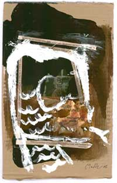

EL ANIMAL CON TODAS LAS LETRAS
Este animal se llama Panrétor. Es visible, y tiene forma. Esta forma se puede describir, no pide sino ser descrita, y así empezaría el libro, con un orden primordial de articulaciones, con un músculo retráctil y una uña fatal: con sangre encauzada en los caminos de un símbolo y de vuelta hacia él; así empezaría a circular el libro, despacio, venas adelante y sin pausa: el animal se mueve siempre sin pausa y sin pausa hay que describirlo, y en ese punto del movimiento su instinto le hace saber que allí donde el libro arranque él ha claudicado, que el texto es epitafio o placa en la jaula, y Panrétor, arrastrado por el agua de esta frase, toma aire, cabecea en la superficie y desaparece en su interior. La frase sigue su curso, fluyendo hacia abajo; y más allá, a unas brazas de distancia, un remolino agita otras aguas y a lo lejos puede verse la cabeza de Panrétor emergiendo. En el estrépito de la tormenta, el curso en que navega corre paralelo al de esta frase, como dos ríos vecinos, pero a esta altura del río no hay un brazo de agua que los una, y muchos afluentes de la nuestra giran a izquierda y derecha y pierden el curso principal sin haber dado cuenta de Panrétor. En la distancia, una ola se levanta en el furor de la corriente y traga al animal: sigue a la ola una efusión de espuma como un segundo terceto del poema, y coronado de espuma Panrétor agita la cola y se agarra a un tronco que baja entre las rocas. Durante un tramo, no podemos verlo, en la superficie de la frase paralela; no hasta que suelta el tronco con un bramido y vuelve a desaparecer bajo las aguas. Esto lo podemos imaginar.
Hemos abandonado el curso principal, y buceando en el fondo del río giramos por un canal a la izquierda. Nadamos en una oscuridad emparedada en los elementos. Salimos al curso vecino, y en su fondo la luz submarina nos muestra cómo se hunden lentamente los restos del discurso de Panrétor. Su rastro: el caimán despellejado va cayendo sangre abajo como un signo de interrogación; las rocas abisales, que esconden las morenas, son rosetas de sánscrito y pantallas de la Bolsa: números de Bolsa cuneiformes: el tronco al que se asió reposa ahora en una quietud de pecio, con musgo y mejillones, clavado en la arena final: es una efigie de San Antonio. A su alrededor flotan aún esquirlas de madera. Nos acercamos buceando para examinarla; al alargar la mano hacia la efigie, sentimos una corriente que se avecina y se impone, y nadamos hacia atrás, bajo el agua, en una oleada de saber innominado. Llevados bajo el agua por una corriente que Panrétor dirige.
Por los flujos y marejadas del curso que nos lleva podemos suponer de la volcánica actividad de Panrétor. El curso en que buceamos es momentáneamente limpio; frío y transparente; apenas si topamos con una hoja podrida o un teorema refutado, y sabemos que los datos de ese curso de información son recientes, increados, y aún buscan a un nadador que los encauce. Panrétor ha desviado ese curso desde el río vecino, y nada ahora en un aluvión de antiquísimo saber, tierra pura en movimiento de elefante: dudando la tierra en su lentitud entre seguir corriendo hacia el mar o estancarse en el fondo para siempre. Panrétor gira sobre sí mismo, en una voltereta subacuática, y resuelve esa duda: su movimiento divide el curso de aluvión en tres corrientes y, tomando el impulso de la tercera, vira en el afluente recién creado. Cursos sutilísmos reptan en el fondo, lamiendo las rocas de pizarra: Panrétor los incorpora a su afluente, como un salmón; una oleada de aguas residuales baja arrasando la orilla y exterminando a los moluscos: Panrétor, con celeridad de castor, ha desmembrado como un papel los árboles de la orilla, y la presa resultante sólo deja pasar un hilo puro de fluido nuclear donde el animal juega; un flamenco que bebe en la desembocadura observa cómo del fondo del agua va surgiendo lentamente un inédito delta de tierras renovadas y remotas.
Este curso de información que nos arrastra tiene un ímpetu desmayado y humano, y la frase que le da forma no puede llegar a las últimas estribaciones del ramal. De pronto, se agita. Una fuerza vertical de filípica o tornado lo revuelve desde abajo, lo desmembra en remolinos de sofismo y silogistas aguadillas, y un borbotón de algas nos envuelve mientras entra nuestro curso en contacto con los otros. La temporada de caza ha empezado. La retórica del cuerpo se pone en movimiento. A lo lejos, el lomo de Panrétor va planeando en horizontal; con un corcoveo, se lanza en picado. Su tono de piel se oscurece, y adopta el color de los fondos, confundiéndose con él en un calambur predatorio: así se aproxima a la orca y la devora. Persiguiendo a un escualo, se encuentra cara a cara con él, y éste plantea batalla y con un revuelo de la aleta se dirige hacia él trazando eses velocísimas. El Panrétor no mueve un músculo de su cuerpo hasta que el escualo está encima; entonces, en una súbita regresión, sus patas parecen cambiar su sitio natural en el cuerpo, la cabeza hipertorfiada está de pronto donde un órgano sin nombre debería estar, y alrededor del escualo inmóvil sólo hay cuerpo recompuesto y la sangre en el centro del agua como una metáfora desleída. La metonimia es un arma fatal: allí donde la serpiente de mar sólo veía un sexo exánime flotando entre las hojas, hay de pronto un cuerpo de dentelladas y desgarro. Para cada pasión hay una hipérbole, para cada figura una presa: la voracidad del Panrétor no conoce silencios. Sigue lejos; en un segundo, ha relampagueado hasta aquí, y nos observa. Su aliento es una enorme expiración de datos agotados; nos llega una vaharada de Alejandría en llamas. Vemos brillar un ojo encendido entre las sombras. Hay un momento de inspiración, como un final de verso, y el Panrétor se da la vuelta y con un rumor atávico de fronda y bibliotecas se aleja de nosotros.
Desestimados, nos dejamos llevar por una corriente novedosa que nos sumerge y nos limpia. Sólo podemos intuir la latente ordenación de los cursos y los lagos en el mundo. Con el pasar de las jornadas, los ríos nos entregan nuevos pecios de un archivo que late y se transforma con la pulsión del Panrétor. Una hoja nos dice que su nombre es un encuentro emboscado de punk y rétor. Otra refiere su amistad con Hanuman, el mono gramático, y con el pájaro loco, al que visita en árboles que él mismo ha construido con su papel. Las etimologías, sabemos, son la cortesía de las fosas abisales: son un tanteo de amebas en la noche del inconsciente. Dejamos atrás los aluviones eruditos de las islas, la epopeya familiar del archipiélago, el continente abstracto y elemental. En las orillas del continente, en el rastro del animal, una pulsión de archivo anima el nacimiento de esta frase, que avanza desde la letra y hacia la bestia sin volver la vista atrás.